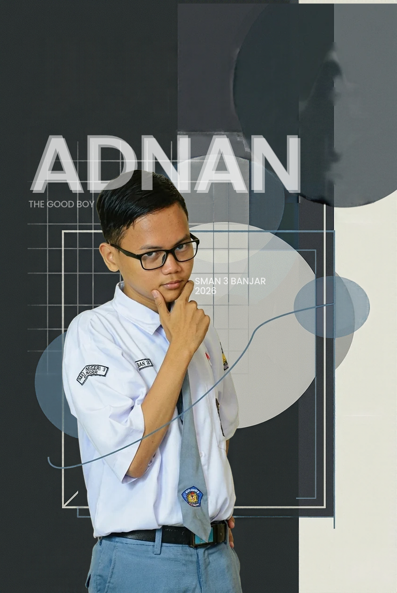

Halo, saya Adnan. Saya suka memahami, mengeksplorasi, dan menciptakan sesuatu.

Sejak awal, saya selalu tertarik pada bagaimana sesuatu bekerja. Saya senang membongkar ide, mempelajari hal baru, dan memahami proses di balik sesuatu yang sering terlihat sederhana.
Ketertarikan itu membawa saya mengenal teknologi, pemrograman, desain, dan berbagai bidang lainnya. Bagi saya, belajar bukan hanya tentang mendapatkan jawaban, tetapi juga menemukan pertanyaan baru yang layak dijelajahi.
Sedang Saya Jelajahi
Saya sedang memperdalam pemrograman, mengeksplorasi pengembangan website, mempelajari cara kerja teknologi, dan mengembangkan kemampuan desain visual. Saya juga mempersiapkan diri untuk perjalanan akademik dan dunia Informatika yang ingin saya tekuni.
Hal-Hal yang Saya Jelajahi
Pemrograman & Teknologi
Memahami bagaimana logika, algoritma, dan teknologi bekerja. Saya tertarik mengeksplorasi cara sebuah sistem dibangun dan bagaimana kode dapat mengubah ide menjadi sesuatu yang nyata.
Pengembangan Web
Membangun website bukan sekadar menyusun elemen di layar. Saya menikmati proses merancang struktur, mengembangkan interaksi, dan menciptakan pengalaman digital yang punya karakter.
Kreativitas Visual
Mengeksplorasi ilustrasi, komposisi, tipografi, dan desain visual. Saya senang melihat bagaimana sebuah gagasan dapat diterjemahkan menjadi sesuatu yang punya identitas.
Pemecahan Masalah
Menyukai tantangan yang membutuhkan pemikiran logis, ketelitian, dan pendekatan kreatif. Dari algoritma hingga persoalan sehari-hari, selalu ada hal yang bisa dipelajari dari proses mencari solusi.
Masih banyak hal yang ingin saya jelajahi.
Setiap proses belajar membuka kemungkinan baru. Masih banyak ide yang ingin diwujudkan, keterampilan yang ingin dikembangkan, dan pengalaman yang ingin dijalani. Jika ada sesuatu yang menarik untuk dibicarakan atau dikerjakan bersama, saya akan senang untuk terhubung.